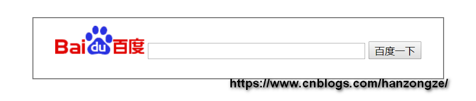

呈现效果如下：
实现代码如下：
<!DOCTYPE html>
<html>
<head>
<meta charset="UTF-8">
<title>在页面中嵌入百度搜索框</title>
<style>
form {
width: 500px;
height: 50px;
padding: 10px 20px 20px;
text-align: center;
line-height: 50px;
border: 1px solid #777777;
}
</style>
</head>
<body>
<form action="http://www.baidu.com/s" method="GET" target="_blank">
<img src="http://www.baidu.com/img/baidu_jgylogo3.gif" alt="百度Logo" />
<input type="text" name="wd" size="38" />
<input type="submit" value="百度一下" />
<input type="hidden" name="ie" value="utf-8" />
<input type="hidden" name="tn" value="ace" />
</form>
</body>
</html>实现原理其实也很简单，相当于通过form表单向百度服务器发送了一个GET请求。参数解释如下：
wd 即 Word，查询关键词。必须参数。ie 即 Input Encoding，查询关键词的编码。有缺省值，非必须参数。tn 表示提交搜索请求的来源站点。有缺省值，非必须参数。本文链接：http://www.cnblogs.com/hanzongze/p/js-baidu-search.html
版权声明：本文为博客园博主 韩宗泽 原创，作者保留署名权！欢迎通过转载、演绎或其它传播方式来使用本文，但必须在明显位置给出作者署名和本文链接！个人博客，能力有限，若有不当之处，敬请批评指正，谢谢！